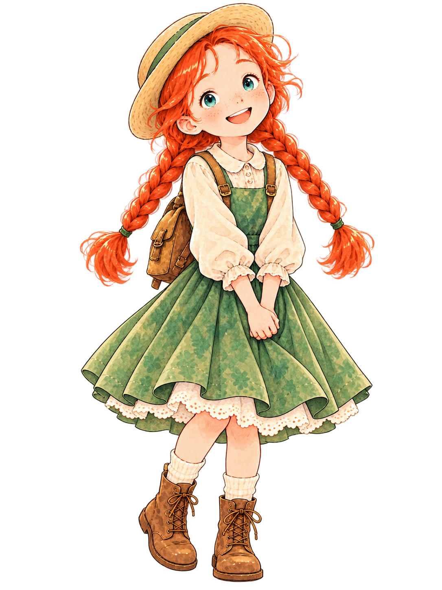
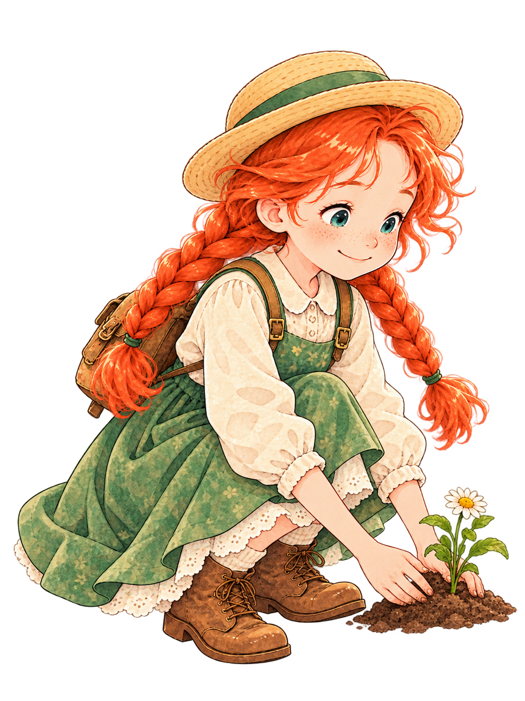
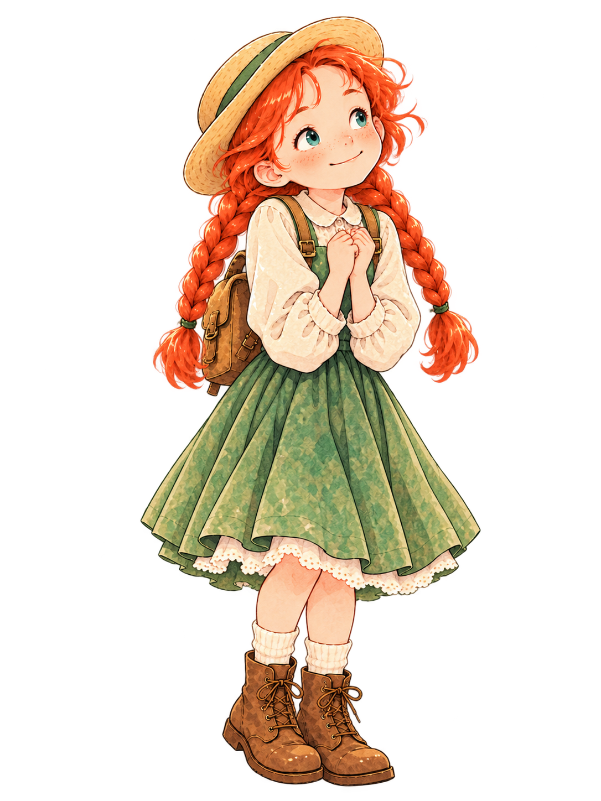
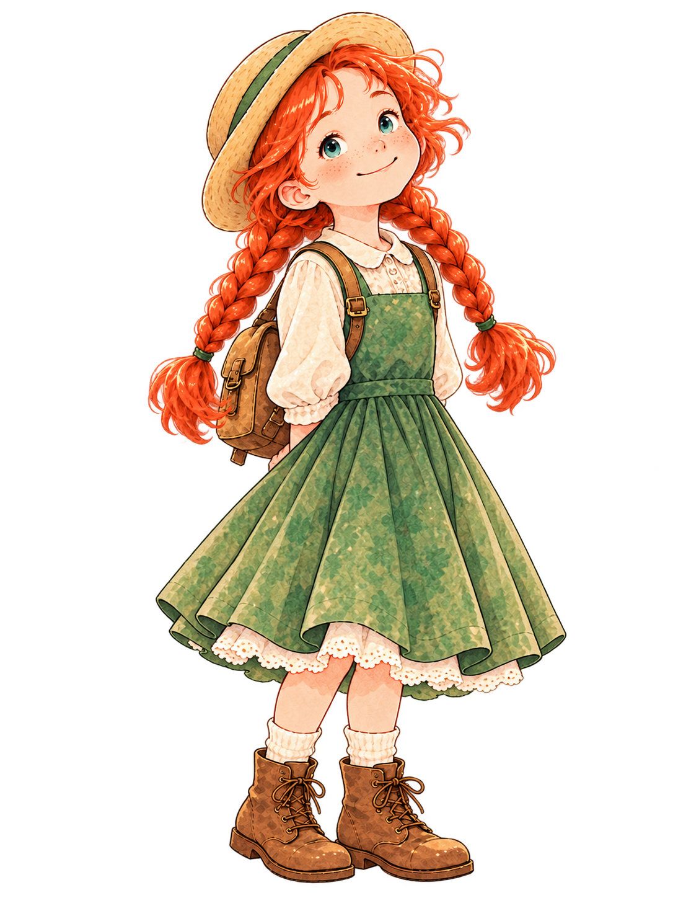

오늘의 정원 루틴
오늘 3가지를 완료하면 보물상자가 열려요. 매일 다른 명언·모험·보상을 만나보세요.
오늘 0/3 완료
 씨앗 0
씨앗 0

마음은 기록할수록 선명해지고, 작은 기쁨은 돌볼수록 자라요. 일기를 쓰고, 정원을 가꾸고, 이야기를 모험하며 나만의 행복 세계를 만들어 보세요.


관리자 모드 주소로 들어오면 처음 한 번 자동으로 씨앗 30개와 별 20개가 지급돼요.


오늘 3가지를 완료하면 보물상자가 열려요. 매일 다른 명언·모험·보상을 만나보세요.
기록하고 꽃을 심을수록 장면과 소품이 조금씩 달라져요.


명언을 읽고 미션을 완료하면 카드와 테마 꽃을 모을 수 있어요.
기록과 놀이가 하나의 세계로 이어져요.
작은 기록과 행동이 쌓일수록 밝음·용기·다정함이 자라나요.

좋은 날도, 속상한 날도, 지친 날도 모두 기록할 가치가 있어요.

완벽하게 쓰지 않아도 괜찮아. 오늘의 진짜 마음 한 줄이면 충분해.

씨앗 3개로 꽃 한 송이를 심을 수 있어요. 꽃마다 그날의 기억을 품고 있어요.

심은 꽃은 장면 속에 차곡차곡 쌓여요. 꽃 카드를 누르면 그날의 메모가 열려요.
원하는 꽃을 고른 뒤 씨앗 3개로 정원에 심어 보세요.
선택에 따라 다른 마음 에너지가 자라고, 작은 보물도 모여요.


선택을 하다 보면 엽서, 리본, 작은 책 같은 보물이 쌓여요.
총 500카드. 원문을 읽고 → 표현을 이해하고 → 소리 내어 말하고 → 직접 한 문장 써보는 순서예요.
“Isn't it splendid to think of all the things there are to find out about?”
아직 알아갈 것이 이렇게 많다는 건 참 멋진 일이야.
앞날이 불확실해도 모든 답을 당장 알아야 한다고 생각하지 않고 작은 가능성에 주의를 기울일 수 있어.
‘A한 상황에서도 C하지 않고 B할 수 있다’는 자연스러운 대조 표현이에요.
결과가 불분명해도 수동적이 되지 않고 신중함을 유지할 수 있어.
먼저 듣고, 화면을 보지 않고 한 번 말해보세요.
내 목소리를 녹음한 뒤 바로 들어볼 수 있어요. 녹음은 서버에 올라가지 않고 이 화면에서만 사용돼요.
정답 하나만 있는 문제는 아니에요. 핵심 표현을 직접 써보는 게 목표예요.
원문 듣기 → 표현 → 말하기 → 영작까지 해보면 한 카드 완료!

지금의 마음을 미래의 나에게 보내보세요. 약속한 날에 편지가 열려요.

오늘의 마음을 적어 두면, 내가 정한 날에 다시 만날 수 있어요.


일기와 모험이 차곡차곡 모여 나만의 한 권이 돼요.